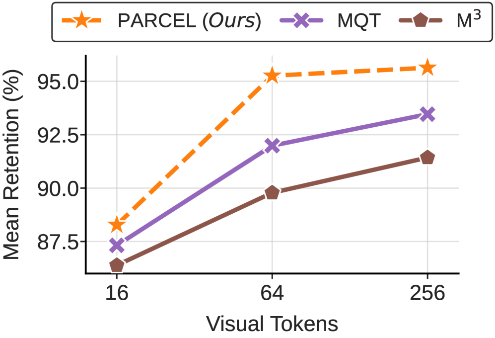
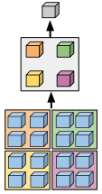
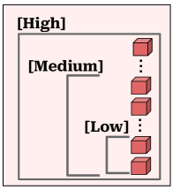
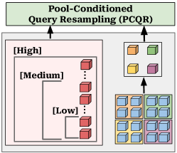
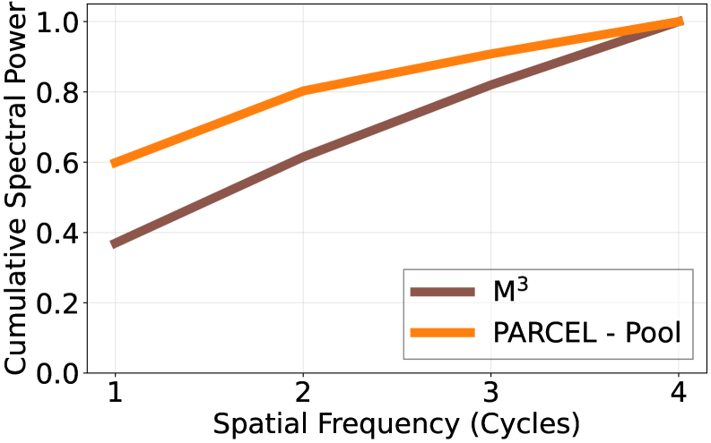
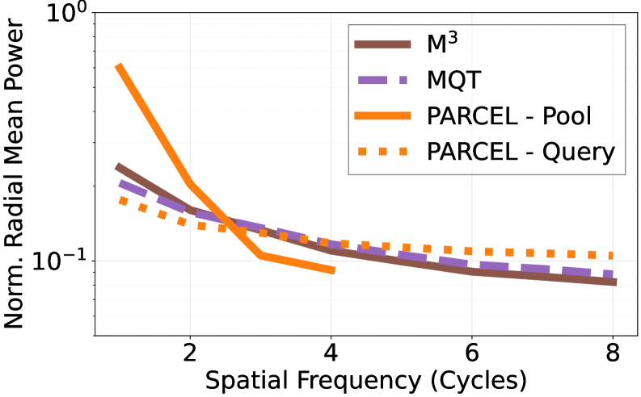

2D Anchors
Budget-aware pooling creates deterministic spatial anchors that preserve low-frequency geometry and explicit layout.
Efficient Vision-Language Understanding
PARCEL introduces a hybrid visual tokenization architecture for LVLMs that splits the work between deterministic 2D anchors and pool-conditioned semantic explorer queries. The result is a stronger performance-efficiency frontier across 27 benchmarks and visual-token budgets from 16 to 256 tokens.
Why PARCEL
Existing elastic LVLM compression methods break in opposite ways under aggressive budgets. Spatial-only pooling blurs detail through aliasing, while query-only resampling weakens dense spatial grounding.
PARCEL creates a deliberate division of labor: pooled 2D anchor tokens hold onto low-frequency layout, while pool-aware query tokens recover complementary visual detail from the full feature grid.
Across 27 benchmarks, PARCEL shifts the Pareto frontier, outperforming M3 and MQT at matched budgets while preserving the “train once, deploy anywhere” deployment story.

Animated Overview

Design Motivation



Method

Budget-aware pooling creates deterministic spatial anchors that preserve low-frequency geometry and explicit layout.
Learnable query tokens first attend to the anchors, so they no longer need to infer coarse layout from scratch.
The conditioned queries cross-attend to the full ViT features to recover complementary details that the pooled grid drops.
PARCEL dynamically scales anchor size and query count so the model stays useful at both severe and generous budgets.
Spectral Analysis


On ChartQA, this separation aligns with gains of +4.7 points at 64 tokens and +3.4 points at 256 tokens over M3.
Budget Routing

The model falls back to a severe anchor budget and preserves a usable compressed visual base even in the most constrained setting.
PARCEL expands the spatial anchor so the model does not waste query capacity reconstructing structural detail that could have been preserved directly.
Once the anchor base is sufficiently rich, the semantic explorer queries activate on top to recover complementary fine-grained information.
Results
PARCEL leads the image aggregate at every reported budget: 95.1% at 256, 94.7% at 64, and 86.8% at 16 tokens.
The video aggregate remains especially strong, with 98.0% at 256, 97.9% at 64, and 95.0% at 16 tokens.
The explicit anchor pathway matters for dense spatial grounding under compression.
PARCEL also reaches 90.0% at 64 tokens and 90.8% at 256 tokens on the most resolution-sensitive evaluation block.
The full model wins across 256, 64, and 16 token budgets in the main ablation suite.
Pure pooling hits a hard ceiling when query exploration is removed.
Pool-aware query conditioning edges out ViT-only query designs at the highest budget.
Abstract
Large Vision-Language Models map visual inputs into dense token sequences, creating a quadratic inference bottleneck. PARCEL addresses this with a hybrid visual tokenization architecture that keeps low-frequency layout in pooled spatial anchors while using pool-conditioned elastic queries to recover complementary detail. Across 27 benchmarks, it improves the performance-efficiency Pareto frontier over prior matryoshka baselines while preserving a single-model, multi-budget deployment setup.
Citation
This version is intentionally GitHub Pages-friendly: plain HTML, CSS, and a small script. When you have a code repository or demo video, you can drop those links into the hero actions without changing the page structure.
@article{kuzucu2026parcel,
title = {PARCEL: Pool-Anchored Resampling with Conditioned Elastic Queries for Efficient Vision-Language Understanding},
author = {Kuzucu, Selim and Tonioni, Alessio and Lup, Vasile and Schiele, Bernt and Tombari, Federico and Naeem, Muhammad Ferjad},
journal = {arXiv preprint arXiv:2605.30126},
year = {2026}
}